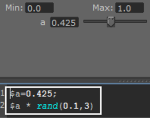
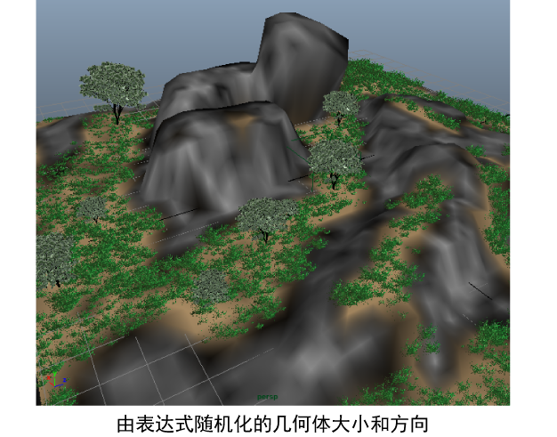

您可以使用表达式来实现几何体的大小、形状和方向的随机化。这样，就可以多次实例化同一几何体，但每个实例在场景中的显示都不相同。
一种改变实例化几何体的简单方法是使用随机化表达式。
将随机化添加到“扭曲”(Twist)属性
- 在“基本体属性”(Primitive Attributes)部分，单击“扭曲”(Twist)旁边的
 图标。
图标。
- 在“XGen 表达式编辑器”(XGen Expression Editor)中，键入以下表达式：rand(0,360)。
- 单击“接受”(Accept)。
每棵树现在都有其独特的“扭曲”(Twist)值。
使用集合表达式生成变化
另一种生成随机化的方式是创建集合表达式。此类型的表达式可以应用于集合中所有描述的不同基本体属性值。
在此示例中，可以使用集合表达式来创建具有滑块控件的自定义 XGen 属性。使用该滑块控件，可以生成随机化的值，并应用于“长度”(Length)、“宽度”(Width)、“深度”(Depth)和“扭曲”(Twist)等属性。
- 在“XGen”窗口中，单击“表达式”(Expressions)选项卡。
- 在“名称”(Name)旁边，键入自定义表达式的名称，例如 randomizer。
由于此表达式使用浮点值，因此将其设置保留为“浮点型”(Float)。
- 单击
 图标以创建该属性。
图标以创建该属性。
- 单击属性旁边的 图标。
- 在“XGen 表达式编辑器”(XGen Expression Editor)中，键入：
$a=;
这将会为该属性创建一个滑块控件。
- 在下一行键入以下表达式：
$a*rand(0.1, 3.0)。
 - 单击“接受”(Accept)。
在该表达式中，滑块的值会乘以一个随机函数。现在，可以将基本体属性设置为使用该表达式生成的随机化值。
- 单击“基本体”(Primitives)选项卡，再单击“长度”(Length)旁边的 图标。
- 清除显示在“XGen 表达式编辑器”(XGen Expression Editor)中的内容，然后键入自定义属性名称，后跟 ()，例如 randomizer()。单击“接受”(Accept)。
现在，会根据自定义属性滑块设置随机生成指定给长度的值。
- 针对“宽度”(Width)、“深度”(Depth)和“扭曲”(Twist)重复上面的步骤。
- 单击“表达式”(Expressions)选项卡，然后使用自定义属性滑块生成合适的值。
也可以使用 randomizer() 表达式来改变场景中草丛的大小和方向。

使用所需的渲染器渲染场景。请参见着色和渲染 XGen 基本体。